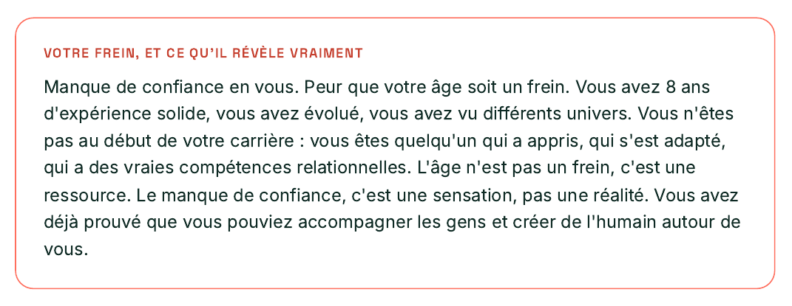
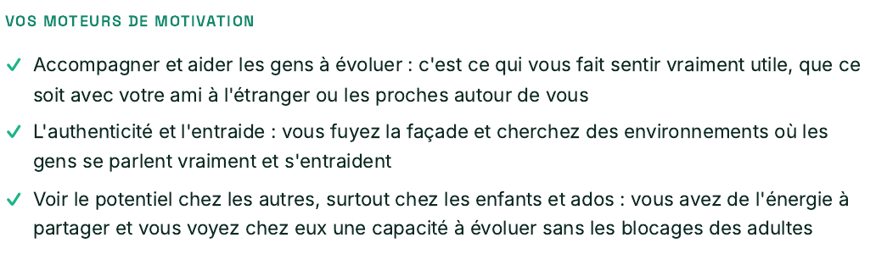
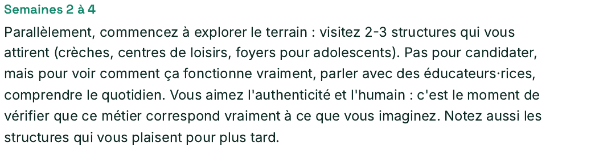
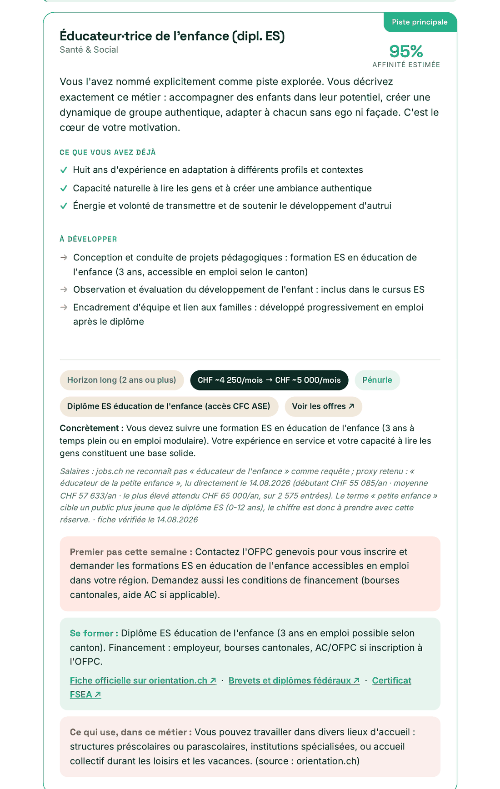

Cynth.IA n'est pas encore ouverte au public. Entrez le code qui vous a été communiqué.
Pas de code ? Écrivez à contact@cynthia-orientation.ch
Ce n'est pas un rendez-vous chez un conseiller. C'est un rendez-vous avec vous-même. Le premier, peut-être. Disponible maintenant. À la fin, un rapport à garder.
D'autres IA peuvent vous parler d'orientation. Cynthia va plus loin : chaque piste vient d'une fiche métier suisse vérifiée, chaque chiffre porte sa source et sa date de relevé. Vous repartez avec un dossier vérifiable, prêt à montrer à un conseiller ORP.
20 minutes, plus si vous avez à raconter. C'est elle qui mène, et chaque réponse construit votre profil. Elle prend le temps de vous écouter avant de proposer la moindre piste.
Votre portrait, vos pistes métier, chaque chiffre avec sa source et sa date de relevé, et les liens pour agir dès demain.
Le CFC, le brevet fédéral, l'article 32 : elle connaît les repères d'ici.
Dès que l'envie est là, sans devoir prendre rendez-vous.
Pendant la phase de test, l'entretien et le rapport sont offerts. Vous gardez le rapport.
Ce n'est pas une liste de métiers. C'est un dossier que vous pouvez montrer à votre conjoint, à votre conseiller ORP, ou relire dans six mois.

Un frein qu'elle nomme et retourne, pas une liste de qualités génériques.

Ses propres mots, reliés à ce qui la fait vraiment avancer.

Un plan concret dès le premier mois, pas juste une idée dans six mois.

Une fiche métier complète : score, CHF sourcés et datés, formation, financement, premier pas de la semaine.
Vous allez nous confier des choses personnelles. Autant commencer par être clairs.
On fait ce qu'un proche a fait avant nous. On suit la voie de quelqu'un qu'on admire. On prend le poste qui se présente parce qu'il faut payer les factures ce mois-ci, et ce mois-ci dure dix ans. Ce ne sont pas de mauvaises décisions : ce sont des décisions prises sans avoir jamais eu le temps de se demander ce qu'on voulait vraiment.
Je suis arrivé à Genève de l'étranger et je me suis renseigné, sérieusement. L'information existe, elle est même bien faite, mais elle ne dit pas ce qui, là-dedans, vous concerne vous. Un bilan de compétences coûte environ 1 500 à 2 000 francs et se planifie sur trois mois ; viamia, le dispositif public, est gratuit mais commence à 40 ans. Entre les deux, il n'y a rien. Alors j'ai construit le conseiller que je cherchais, et je lui ai appris à poser les questions que personne ne m'avait posées.
Vous en saurez plus sur votre avenir qu'en deux ans à y penser le dimanche soir.
Saisissez votre prénom pour personnaliser l'entretien. L'email est optionnel : le rapport est téléchargeable directement.
Glissez votre CV ici ou cliquez
PDF, Word · max 5 MoEn continuant, vous acceptez nos conditions d'utilisation et notre politique de confidentialité.
Choisissez ce qui vous ressemble le plus.
Plusieurs réponses possibles.
Pas besoin d'être modeste : ce que vos proches diraient de vous.
Plusieurs réponses possibles.
Les aides et les démarches ne sont pas les mêmes pour tout le monde.
Sur 10, à quel point voyez-vous clair aujourd'hui sur la direction professionnelle à prendre ?
Bravo. Vous venez de faire ce que peu osent : prendre 20 minutes pour vraiment réfléchir à votre avenir. Votre rapport est en cours de génération.
Le récapitulatif de votre parcours et votre portrait, avec votre profil de personnalité chiffré
Le changement qui vous concerne vraiment : métier, environnement ou équilibre
Vos moteurs, votre environnement de travail idéal, vos savoir-faire et savoir-être
Des phrases prêtes à coller dans votre CV, et votre pitch de reconversion
5 pistes métier (3 principales chiffrées en CHF + 2 à explorer, pour élargir le champ) avec la raison de chaque choix
Pour chaque piste : la formation, sa durée, son coût en CHF et qui la finance
Plan d'action sur 6 mois, étape par étape, et vos ressources en Suisse
Cynth.IA va analyser votre conversation et créer vos 5 pistes professionnelles personnalisées, avec salaires CHF et formations suisses pour les pistes principales.